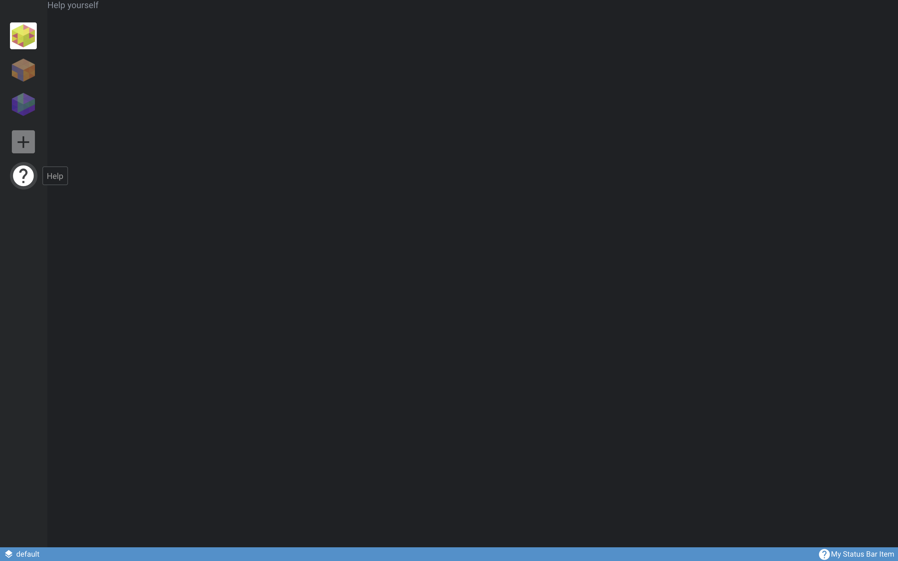
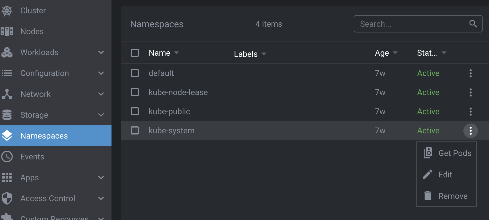
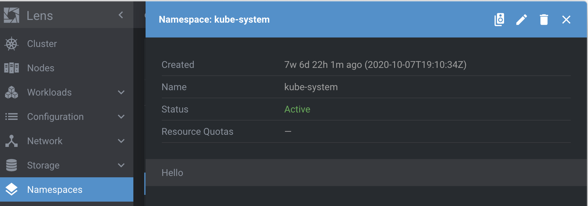
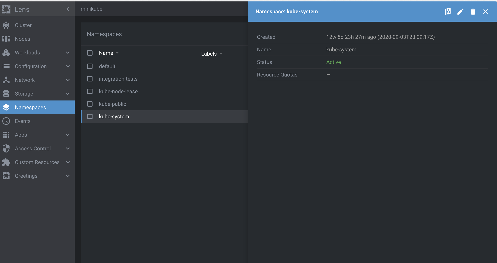
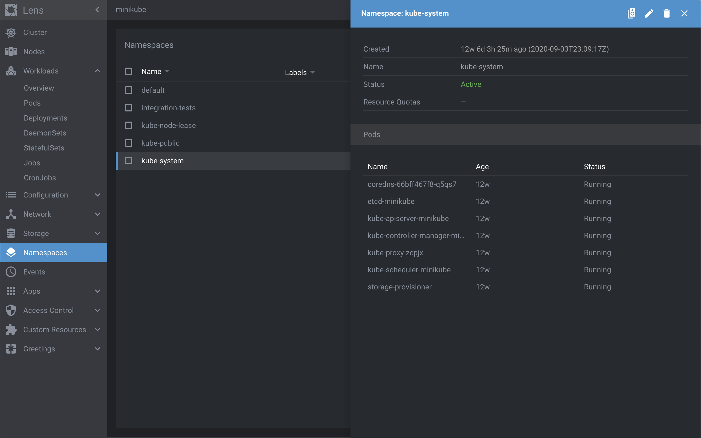

Renderer Extension
The Renderer Extension API is the interface to Lens's renderer process. Lens runs in both the main and renderer processes. The Renderer Extension API allows you to access, configure, and customize Lens data, add custom Lens UI elements, and run custom code in Lens's renderer process.
The custom Lens UI elements that you can add include:
- Cluster pages
- Cluster page menus
- Global pages
- Global page menus
- App preferences
- Status bar items
- KubeObject menu items
- KubeObject detail items
All UI elements are based on React components.
LensRendererExtension Class
onActivate() and onDeactivate() Methods
To create a renderer extension, extend the LensRendererExtension class:
import { LensRendererExtension } from "@k8slens/extensions";
export default class ExampleExtensionMain extends LensRendererExtension {
onActivate() {
console.log('custom renderer process extension code started');
}
onDeactivate() {
console.log('custom renderer process extension de-activated');
}
}
Two methods enable you to run custom code: onActivate() and onDeactivate().
Enabling your extension calls onActivate() and disabling your extension calls onDeactivate().
You can initiate custom code by implementing onActivate().
Implementing onDeactivate() gives you the opportunity to clean up after your extension.
!!! info Disable extensions from the Lens Extensions page:
1. Navigate to **File** > **Extensions** in the top menu bar.
(On Mac, it is **Lens** > **Extensions**.)
2. Click **Disable** on the extension you want to disable.
The example above logs messages when the extension is enabled and disabled.
clusterPages
Cluster pages appear in the cluster dashboard.
Use cluster pages to display information about or add functionality to the active cluster.
It is also possible to include custom details from other clusters.
Use your extension to access Kubernetes resources in the active cluster with ClusterStore.getInstance().
Add a cluster page definition to a LensRendererExtension subclass with the following example:
import { LensRendererExtension } from "@k8slens/extensions";
import { ExampleIcon, ExamplePage } from "./page"
import React from "react"
export default class ExampleExtension extends LensRendererExtension {
clusterPages = [
{
id: "hello",
components: {
Page: () => <ExamplePage extension={this}/>,
}
}
];
}
clusterPages is an array of objects that satisfy the PageRegistration interface.
The properties of the clusterPages array objects are defined as follows:
idis a string that identifies the page.componentsmatches thePageComponentsinterface for which there is one field,Page.Pageis of typeReact.ComponentType<any>. It offers flexibility in defining the appearance and behavior of your page.
ExamplePage in the example above can be defined in page.tsx:
import { LensRendererExtension } from "@k8slens/extensions";
import React from "react"
export class ExamplePage extends React.Component<{ extension: LensRendererExtension }> {
render() {
return (
<div>
<p>Hello world!</p>
</div>
)
}
}
Note that the ExamplePage class defines the extension property.
This allows the ExampleExtension object to be passed in the cluster page definition in the React style.
This way, ExamplePage can access all ExampleExtension subclass data.
The above example shows how to create a cluster page, but not how to make that page available to the Lens user.
Use clusterPageMenus, covered in the next section, to add cluster pages to the Lens UI.
clusterPageMenus
clusterPageMenus allows you to add cluster page menu items to the secondary left nav.
By expanding on the above example, you can add a cluster page menu item to the ExampleExtension definition:
import { LensRendererExtension } from "@k8slens/extensions";
import { ExampleIcon, ExamplePage } from "./page"
import React from "react"
export default class ExampleExtension extends LensRendererExtension {
clusterPages = [
{
id: "hello",
components: {
Page: () => <ExamplePage extension={this}/>,
}
}
];
clusterPageMenus = [
{
target: { pageId: "hello" },
title: "Hello World",
components: {
Icon: ExampleIcon,
}
},
];
}
clusterPageMenus is an array of objects that satisfy the ClusterPageMenuRegistration interface.
This element defines how the cluster page menu item will appear and what it will do when you click it.
The properties of the clusterPageMenus array objects are defined as follows:
targetlinks to the relevant cluster page usingpageId.pageIdtakes the value of the relevant cluster page'sidproperty.titlesets the name of the cluster page menu item that will appear in the left side menu.componentsis used to set an icon that appears to the left of thetitletext in the left side menu.
The above example creates a menu item that reads Hello World.
When users click Hello World, the cluster dashboard will show the contents of Example Page.
This example requires the definition of another React-based component, ExampleIcon, which has been added to page.tsx, as follows:
import { LensRendererExtension, Component } from "@k8slens/extensions";
import React from "react"
export function ExampleIcon(props: Component.IconProps) {
return <Component.Icon {...props} material="pages" tooltip={"Hi!"}/>
}
export class ExamplePage extends React.Component<{ extension: LensRendererExtension }> {
render() {
return (
<div>
<p>Hello world!</p>
</div>
)
}
}
Lens includes various built-in components available for extension developers to use.
One of these is the Component.Icon, introduced in ExampleIcon, which you can use to access any of the icons available at Material Design.
The properties that Component.Icon uses are defined as follows:
materialtakes the name of the icon you want to use.tooltipsets the text you want to appear when a user hovers over the icon.
clusterPageMenus can also be used to define sub menu items, so that you can create groups of cluster pages.
The following example groups two sub menu items under one parent menu item:
import { LensRendererExtension } from "@k8slens/extensions";
import { ExampleIcon, ExamplePage } from "./page"
import React from "react"
export default class ExampleExtension extends LensRendererExtension {
clusterPages = [
{
id: "hello",
components: {
Page: () => <ExamplePage extension={this}/>,
}
},
{
id: "bonjour",
components: {
Page: () => <ExemplePage extension={this}/>,
}
}
];
clusterPageMenus = [
{
id: "example",
title: "Greetings",
components: {
Icon: ExampleIcon,
}
},
{
parentId: "example",
target: { pageId: "hello" },
title: "Hello World",
components: {
Icon: ExampleIcon,
}
},
{
parentId: "example",
target: { pageId: "bonjour" },
title: "Bonjour le monde",
components: {
Icon: ExempleIcon,
}
}
];
}
The above defines two cluster pages and three cluster page menu objects.
The cluster page definitions are straightforward.
The three cluster page menu objects include one parent menu item and two sub menu items.
The first cluster page menu object defines the parent of a foldout submenu.
Setting the id field in a cluster page menu definition implies that it is defining a foldout submenu.
Also note that the target field is not specified (it is ignored if the id field is specified).
This cluster page menu object specifies the title and components fields, which are used in displaying the menu item in the cluster dashboard sidebar.
Initially the submenu is hidden.
Activating this menu item toggles on and off the appearance of the submenu below it.
The remaining two cluster page menu objects define the contents of the submenu.
A cluster page menu object is defined to be a submenu item by setting the parentId field to the id of the parent of a foldout submenu, "example" in this case.
This is what the example will look like, including how the menu item will appear in the secondary left nav:
globalPages
Global pages are independent of the cluster dashboard and can fill the entire Lens UI. Their primary use is to display information and provide functionality across clusters, including customized data and functionality unique to your extension.
Typically, you would use a global page menu located in the left nav to trigger a global page. You can also trigger a global page with a custom app menu selection from a Main Extension or a custom status bar item. Unlike cluster pages, users can trigger global pages even when there is no active cluster.
The following example defines a LensRendererExtension subclass with a single global page definition:
import { LensRendererExtension } from '@k8slens/extensions';
import { HelpPage } from './page';
import React from 'react';
export default class HelpExtension extends LensRendererExtension {
globalPages = [
{
id: "help",
components: {
Page: () => <HelpPage extension={this}/>,
}
}
];
}
globalPages is an array of objects that satisfy the PageRegistration interface.
The properties of the globalPages array objects are defined as follows:
idis a string that identifies the page.componentsmatches thePageComponentsinterface for which there is one field,Page.Pageis of typeReact.ComponentType<any>. It offers flexibility in defining the appearance and behavior of your page.
HelpPage in the example above can be defined in page.tsx:
import { LensRendererExtension } from "@k8slens/extensions";
import React from "react"
export class HelpPage extends React.Component<{ extension: LensRendererExtension }> {
render() {
return (
<div>
<p>Help yourself</p>
</div>
)
}
}
Note that the HelpPage class defines the extension property.
This allows the HelpExtension object to be passed in the global page definition in the React-style.
This way, HelpPage can access all HelpExtension subclass data.
This example code shows how to create a global page, but not how to make that page available to the Lens user. Global pages can be made available in the following ways:
- To add global pages to the top menu bar, see
appMenusin the Main Extension guide. - To add global pages as an interactive element in the blue status bar along the bottom of the Lens UI, see
statusBarItems. - To add global pages to the left side menu, see
globalPageMenus.
globalPageMenus
globalPageMenus allows you to add global page menu items to the left nav.
By expanding on the above example, you can add a global page menu item to the HelpExtension definition:
import { LensRendererExtension } from "@k8slens/extensions";
import { HelpIcon, HelpPage } from "./page"
import React from "react"
export default class HelpExtension extends LensRendererExtension {
globalPages = [
{
id: "help",
components: {
Page: () => <HelpPage extension={this}/>,
}
}
];
globalPageMenus = [
{
target: { pageId: "help" },
title: "Help",
components: {
Icon: HelpIcon,
}
},
];
}
globalPageMenus is an array of objects that satisfy the PageMenuRegistration interface.
This element defines how the global page menu item will appear and what it will do when you click it.
The properties of the globalPageMenus array objects are defined as follows:
targetlinks to the relevant global page usingpageId.pageIdtakes the value of the relevant global page'sidproperty.titlesets the name of the global page menu item that will display as a tooltip in the left nav.componentsis used to set an icon that appears in the left nav.
The above example creates a "Help" icon menu item.
When users click the icon, the Lens UI will display the contents of ExamplePage.
This example requires the definition of another React-based component, HelpIcon.
Update page.tsx from the example above with the HelpIcon definition, as follows:
import { LensRendererExtension, Component } from "@k8slens/extensions";
import React from "react"
export function HelpIcon(props: Component.IconProps) {
return <Component.Icon {...props} material="help"/>
}
export class HelpPage extends React.Component<{ extension: LensRendererExtension }> {
render() {
return (
<div>
<p>Help</p>
</div>
)
}
}
Lens includes various built-in components available for extension developers to use.
One of these is the Component.Icon, introduced in HelpIcon, which you can use to access any of the icons available at Material Design.
The property that Component.Icon uses is defined as follows:
materialtakes the name of the icon you want to use.
This is what the example will look like, including how the menu item will appear in the left nav:

clusterFeatures
Cluster features are Kubernetes resources that can be applied to and managed within the active cluster. They can be installed and uninstalled by the Lens user from the cluster Settings page.
!!! info To access the cluster Settings page, right-click the relevant cluster in the left side menu and click Settings.
The following example shows how to add a cluster feature as part of a LensRendererExtension:
import { LensRendererExtension } from "@k8slens/extensions"
import { ExampleFeature } from "./src/example-feature"
import React from "react"
export default class ExampleFeatureExtension extends LensRendererExtension {
clusterFeatures = [
{
title: "Example Feature",
components: {
Description: () => {
return (
<span>
Enable an example feature.
</span>
)
}
},
feature: new ExampleFeature()
}
];
}
The properties of the clusterFeatures array objects are defined as follows:
titleandcomponents.Descriptionprovide content that appears on the cluster settings page, in the Features section.featurespecifies an instance which extends the abstract classClusterFeature.Feature, and specifically implements the following methods:
abstract install(cluster: Cluster): Promise<void>;
abstract upgrade(cluster: Cluster): Promise<void>;
abstract uninstall(cluster: Cluster): Promise<void>;
abstract updateStatus(cluster: Cluster): Promise<ClusterFeatureStatus>;
The four methods listed above are defined as follows:
-
The
install()method installs Kubernetes resources using theapplyResources()method, or by directly accessing the Kubernetes API. This method is typically called when a user indicates that they want to install the feature (i.e., by clicking Install for the feature in the cluster settings page). -
The
upgrade()method upgrades the Kubernetes resources already installed, if they are relevant to the feature. This method is typically called when a user indicates that they want to upgrade the feature (i.e., by clicking Upgrade for the feature in the cluster settings page). -
The
uninstall()method uninstalls Kubernetes resources using the Kubernetes API. This method is typically called when a user indicates that they want to uninstall the feature (i.e., by clicking Uninstall for the feature in the cluster settings page). -
The
updateStatus()method provides the current status information in thestatusfield of theClusterFeature.Featureparent class. Lens periodically calls this method to determine details about the feature's current status. The implementation of this method should uninstall Kubernetes resources using the Kubernetes api (K8sApi) Consider using the following properties withupdateStatus():-
status.currentVersionandstatus.latestVersionmay be displayed by Lens in the feature's description. -
status.installedshould be set totrueif the feature is installed, andfalseotherwise. -
status.canUpgradeis set according to a rule meant to determine whether the feature can be upgraded. This rule can involvestatus.currentVersionandstatus.latestVersion, if desired.
-
The following shows a very simple implementation of a ClusterFeature:
import { ClusterFeature, Store, K8sApi } from "@k8slens/extensions";
import * as path from "path";
export class ExampleFeature extends ClusterFeature.Feature {
async install(cluster: Store.Cluster): Promise<void> {
super.applyResources(cluster, path.join(__dirname, "../resources/"));
}
async upgrade(cluster: Store.Cluster): Promise<void> {
return this.install(cluster);
}
async updateStatus(cluster: Store.Cluster): Promise<ClusterFeature.FeatureStatus> {
try {
const pod = K8sApi.forCluster(cluster, K8sApi.Pod);
const examplePod = await pod.get({name: "example-pod", namespace: "default"});
if (examplePod?.kind) {
this.status.installed = true;
this.status.currentVersion = examplePod.spec.containers[0].image.split(":")[1];
this.status.canUpgrade = true; // a real implementation would perform a check here that is relevant to the specific feature
} else {
this.status.installed = false;
this.status.canUpgrade = false;
}
} catch(e) {
if (e?.error?.code === 404) {
this.status.installed = false;
this.status.canUpgrade = false;
}
}
return this.status;
}
async uninstall(cluster: Store.Cluster): Promise<void> {
const podApi = K8sApi.forCluster(cluster, K8sApi.Pod);
await podApi.delete({name: "example-pod", namespace: "default"});
}
}
This example implements the install() method by invoking the helper applyResources() method.
applyResources() tries to apply all resources read from all files found in the folder path provided.
In this case the folder path is the ../resources subfolder relative to the current source code's folder.
The file ../resources/example-pod.yml could contain:
apiVersion: v1
kind: Pod
metadata:
name: example-pod
spec:
containers:
- name: example-pod
image: nginx
The example above implements the four methods as follows:
-
It implements
upgrade()by invoking theinstall()method. Depending on the feature to be supported by an extension, upgrading may require additional and/or different steps. -
It implements
uninstall()by utilizing the Kubernetes API which Lens provides to delete theexample-podapplied by theinstall()method. -
It implements
updateStatus()by using the Kubernetes API which Lens provides to determine whether theexample-podis installed, what version is associated with it, and whether it can be upgraded. The implementation determines what the status is for a specific cluster feature.
appPreferences
The Lens Preferences page is a built-in global page. You can use Lens extensions to add custom preferences to the Preferences page, providing a single location for users to configure global options.
The following example demonstrates adding a custom preference:
import { LensRendererExtension } from "@k8slens/extensions";
import { ExamplePreferenceHint, ExamplePreferenceInput } from "./src/example-preference";
import { observable } from "mobx";
import React from "react";
export default class ExampleRendererExtension extends LensRendererExtension {
@observable preference = { enabled: false };
appPreferences = [
{
title: "Example Preferences",
components: {
Input: () => <ExamplePreferenceInput preference={this.preference}/>,
Hint: () => <ExamplePreferenceHint/>
}
}
];
}
appPreferences is an array of objects that satisfies the AppPreferenceRegistration interface.
The properties of the appPreferences array objects are defined as follows:
titlesets the heading text displayed on the Preferences page.componentsspecifies twoReact.Componentobjects that define the interface for the preference.Inputspecifies an interactive input element for the preference.Hintprovides descriptive information for the preference, shown below theInputelement.
!!! note Note that the input and the hint can be comprised of more sophisticated elements, according to the needs of the extension.
ExamplePreferenceInput expects its React props to be set to an ExamplePreferenceProps instance.
This is how ExampleRendererExtension handles the state of the preference input.
ExampleRendererExtension has a preference field, which you will add to ExamplePreferenceInput.
In this example ExamplePreferenceInput, ExamplePreferenceHint, and ExamplePreferenceProps are defined in ./src/example-preference.tsx as follows:
import { Component } from "@k8slens/extensions";
import { observer } from "mobx-react";
import React from "react";
export class ExamplePreferenceProps {
preference: {
enabled: boolean;
}
}
@observer
export class ExamplePreferenceInput extends React.Component<ExamplePreferenceProps> {
render() {
const { preference } = this.props;
return (
<Component.Checkbox
label="I understand appPreferences"
value={preference.enabled}
onChange={v => { preference.enabled = v; }}
/>
);
}
}
export class ExamplePreferenceHint extends React.Component {
render() {
return (
<span>This is an example of an appPreference for extensions.</span>
);
}
}
ExamplePreferenceInput implements a simple checkbox using Lens's Component.Checkbox using the following properties:
labelsets the text that displays next to the checkbox.valueis initially set topreference.enabled.onChangeis a function that responds when the state of the checkbox changes.
ExamplePreferenceInput is defined with the ExamplePreferenceProps React props.
This is an object with the single enabled property.
It is used to indicate the state of the preference, and it is bound to the checkbox state in onChange.
ExamplePreferenceHint is a simple text span.
The above example introduces the decorators observable and observer from the mobx and mobx-react packages.
mobx simplifies state management.
Without it, this example would not visually update the checkbox properly when the user activates it.
Lens uses mobx extensively for state management of its own UI elements.
We recommend that extensions rely on it, as well.
Alternatively, you can use React's state management, though mobx is typically simpler to use.
Note that you can manage an extension's state data using an ExtensionStore object, which conveniently handles persistence and synchronization.
To simplify this guide, the example above defines a preference field in the ExampleRendererExtension class definition to hold the extension's state.
However, we recommend that you manage your extension's state data using ExtensionStore.
statusBarItems
The status bar is the blue strip along the bottom of the Lens UI.
statusBarItems are React.ReactNode types.
They can be used to display status information, or act as links to global pages as well as external pages.
The following example adds a statusBarItems definition and a globalPages definition to a LensRendererExtension subclass.
It configures the status bar item to navigate to the global page upon activation (normally a mouse click):
import { LensRendererExtension } from '@k8slens/extensions';
import { HelpIcon, HelpPage } from "./page"
import React from 'react';
export default class HelpExtension extends LensRendererExtension {
globalPages = [
{
id: "help",
components: {
Page: () => <HelpPage extension={this}/>,
}
}
];
statusBarItems = [
{
components: {
Item: (
<div
className="flex align-center gaps"
onClick={() => this.navigate("help")}
>
<HelpIcon />
My Status Bar Item
</div>
)
},
},
];
}
The properties of the statusBarItems array objects are defined as follows:
Itemspecifies theReact.Componentthat will be shown on the status bar. By default, items are added starting from the right side of the status bar. Due to limited space in the status bar,Itemwill typically specify only an icon or a short string of text. The example above reuses theHelpIconfrom theglobalPageMenusguide.onClickdetermines what thestatusBarItemdoes when it is clicked. In the example,onClickis set to a function that calls theLensRendererExtensionnavigate()method.navigatetakes theidof the associated global page as a parameter. Thus, clicking the status bar item activates the associated global pages.
kubeObjectMenuItems
An extension can add custom menu items (kubeObjectMenuItems) for specific Kubernetes resource kinds and apiVersions.
kubeObjectMenuItems appear under the vertical ellipsis for each listed resource in the cluster dashboard:

They also appear on the title bar of the details page for specific resources:

The following example shows how to add a kubeObjectMenuItems for namespace resources with an associated action:
import React from "react"
import { LensRendererExtension } from "@k8slens/extensions";
import { NamespaceMenuItem } from "./src/namespace-menu-item"
export default class ExampleExtension extends LensRendererExtension {
kubeObjectMenuItems = [
{
kind: "Namespace",
apiVersions: ["v1"],
components: {
MenuItem: (props: Component.KubeObjectMenuProps<K8sApi.Namespace>) => <NamespaceMenuItem {...props} />
}
}
];
}
kubeObjectMenuItems is an array of objects matching the KubeObjectMenuRegistration interface.
The example above adds a menu item for namespaces in the cluster dashboard.
The properties of the kubeObjectMenuItems array objects are defined as follows:
kindspecifies the Kubernetes resource type the menu item will apply to.apiVersionspecifies the Kubernetes API version number to use with the resource type.componentsdefines the menu item's appearance and behavior.MenuItemprovides a function that returns aReact.Componentgiven a set of menu item properties. In this example aNamespaceMenuItemobject is returned.
NamespaceMenuItem is defined in ./src/namespace-menu-item.tsx:
import React from "react";
import { Component, K8sApi, Navigation} from "@k8slens/extensions";
export function NamespaceMenuItem(props: Component.KubeObjectMenuProps<K8sApi.Namespace>) {
const { object: namespace, toolbar } = props;
if (!namespace) return null;
const namespaceName = namespace.getName();
const sendToTerminal = (command: string) => {
Component.terminalStore.sendCommand(command, {
enter: true,
newTab: true,
});
Navigation.hideDetails();
};
const getPods = () => {
sendToTerminal(`kubectl get pods -n ${namespaceName}`);
};
return (
<Component.MenuItem onClick={getPods}>
<Component.Icon material="speaker_group" interactive={toolbar} title="Get pods in terminal"/>
<span className="title">Get Pods</span>
</Component.MenuItem>
);
}
NamespaceMenuItem returns a Component.MenuItem which defines the menu item's appearance and its behavior when activated via the onClick property.
In the example, getPods() opens a terminal tab and runs kubectl to get a list of pods running in the current namespace.
The name of the namespace is retrieved from props passed into NamespaceMenuItem().
namespace is the props.object, which is of type K8sApi.Namespace.
K8sApi.Namespace is the API for accessing namespaces.
The current namespace in this example is simply given by namespace.getName().
Thus, kubeObjectMenuItems afford convenient access to the specific resource selected by the user.
kubeObjectDetailItems
An extension can add custom details (kubeObjectDetailItems) for specified Kubernetes resource kinds and apiVersions.
These custom details appear on the details page for a specific resource, such as a Namespace as shown here:

The following example shows how to use kubeObjectDetailItems to add a tabulated list of pods to the Namespace resource details page:
import React from "react"
import { LensRendererExtension } from "@k8slens/extensions";
import { NamespaceDetailsItem } from "./src/namespace-details-item"
export default class ExampleExtension extends LensRendererExtension {
kubeObjectDetailItems = [
{
kind: "Namespace",
apiVersions: ["v1"],
priority: 10,
components: {
Details: (props: Component.KubeObjectDetailsProps<K8sApi.Namespace>) => <NamespaceDetailsItem {...props} />
}
}
];
}
kubeObjectDetailItems is an array of objects matching the KubeObjectDetailRegistration interface.
This example above adds a detail item for namespaces in the cluster dashboard.
The properties of the kubeObjectDetailItems array objects are defined as follows:
kindspecifies the Kubernetes resource type the detail item will apply to.apiVersionspecifies the Kubernetes API version number to use with the resource type.componentsdefines the detail item's appearance and behavior.Detailsprovides a function that returns aReact.Componentgiven a set of detail item properties. In this example aNamespaceDetailsItemobject is returned.
NamespaceDetailsItem is defined in ./src/namespace-details-item.tsx:
import { Component, K8sApi } from "@k8slens/extensions";
import { PodsDetailsList } from "./pods-details-list";
import React from "react";
import { observable } from "mobx";
import { observer } from "mobx-react";
@observer
export class NamespaceDetailsItem extends React.Component<Component.KubeObjectDetailsProps<K8sApi.Namespace>> {
@observable private pods: K8sApi.Pod[];
async componentDidMount() {
this.pods = await K8sApi.podsApi.list({namespace: this.props.object.getName()});
}
render() {
return (
<div>
<Component.DrawerTitle title="Pods" />
<PodsDetailsList pods={this.pods}/>
</div>
)
}
}
Since NamespaceDetailsItem extends React.Component<Component.KubeObjectDetailsProps<K8sApi.Namespace>>, it can access the current namespace object (type K8sApi.Namespace) through this.props.object.
You can query this object for many details about the current namespace.
In the example above, componentDidMount() gets the namespace's name using the K8sApi.Namespace getName() method.
Use the namespace's name to limit the list of pods only to those in the relevant namespace.
To get this list of pods, this example uses the Kubernetes pods API K8sApi.podsApi.list() method.
The K8sApi.podsApi is automatically configured for the active cluster.
Note that K8sApi.podsApi.list() is an asynchronous method.
Getting the pods list should occur prior to rendering the NamespaceDetailsItem.
It is a common technique in React development to await async calls in componentDidMount().
However, componentDidMount() is called right after the first call to render().
In order to effect a subsequent render() call, React must be made aware of a state change.
Like in the appPreferences guide, mobx and mobx-react are used to ensure NamespaceDetailsItem renders when the pods list updates.
This is done simply by marking the pods field as an observable and the NamespaceDetailsItem class itself as an observer.
Finally, the NamespaceDetailsItem renders using the render() method.
Details are placed in drawers, and using Component.DrawerTitle provides a separator from details above this one.
Multiple details in a drawer can be placed in <Component.DrawerItem> elements for further separation, if desired.
The rest of this example's details are defined in PodsDetailsList, found in ./pods-details-list.tsx:
import React from "react";
import { Component, K8sApi } from "@k8slens/extensions";
interface Props {
pods: K8sApi.Pod[];
}
export class PodsDetailsList extends React.Component<Props> {
getTableRow(index: number) {
const {pods} = this.props;
return (
<Component.TableRow key={index} nowrap>
<Component.TableCell className="podName">{pods[index].getName()}</Component.TableCell>
<Component.TableCell className="podAge">{pods[index].getAge()}</Component.TableCell>
<Component.TableCell className="podStatus">{pods[index].getStatus()}</Component.TableCell>
</Component.TableRow>
)
}
render() {
const {pods} = this.props
if (!pods?.length) {
return null;
}
return (
<div >
<Component.Table>
<Component.TableHead>
<Component.TableCell className="podName">Name</Component.TableCell>
<Component.TableCell className="podAge">Age</Component.TableCell>
<Component.TableCell className="podStatus">Status</Component.TableCell>
</Component.TableHead>
{
pods.map((pod, index) => this.getTableRow(index))
}
</Component.Table>
</div>
)
}
}
PodsDetailsList produces a simple table showing a list of the pods found in this namespace:

Obtain the name, age, and status for each pod using the K8sApi.Pod methods.
Construct the table using the Component.Table and related elements.
For each pod the name, age, and status are obtained using the K8sApi.Pod methods.
The table is constructed using the Component.Table and related elements.
See Component documentation for further details.